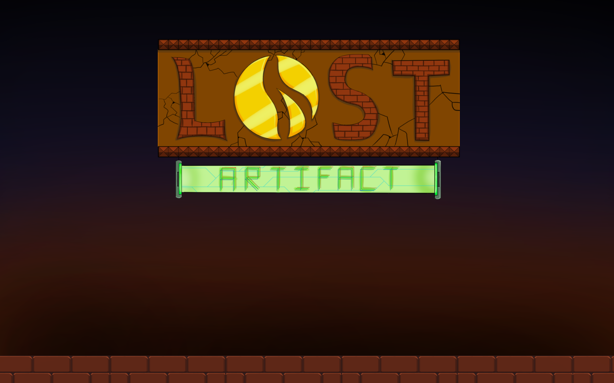
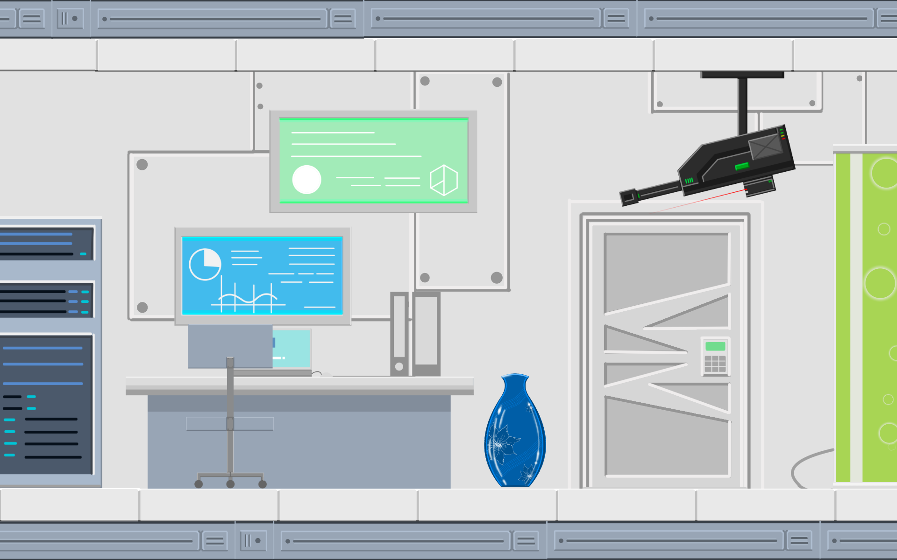
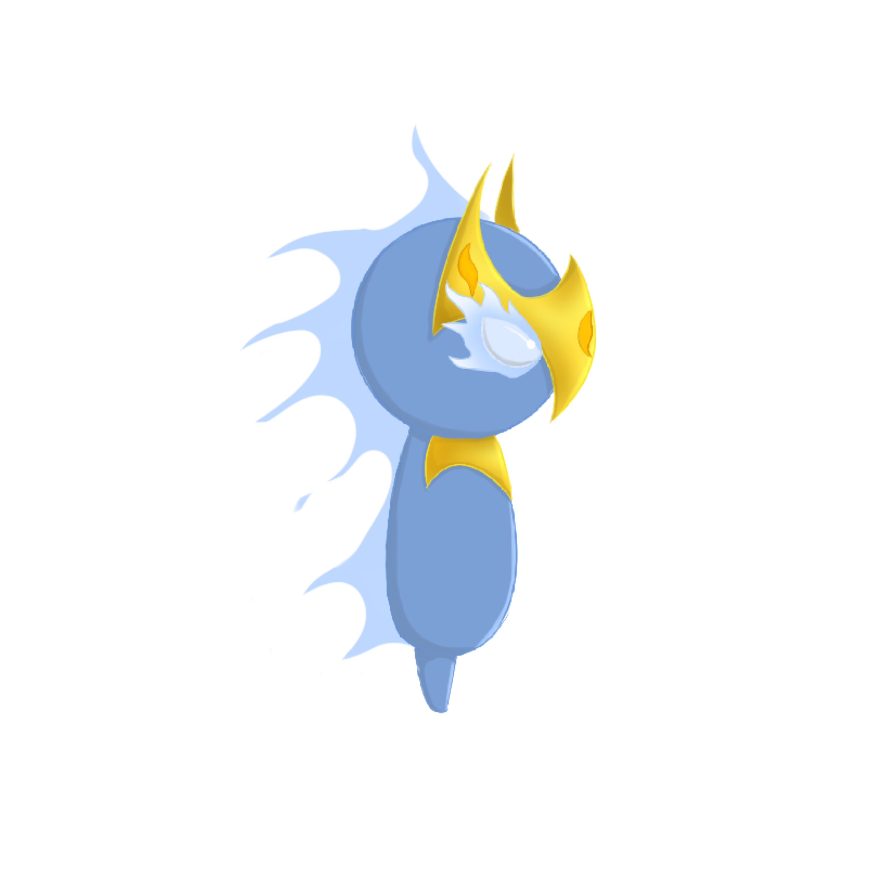

NSC Project : Lost Artifact

โปรเจคเกม Side scrolling 2D คอนเซ็ปต์ของเนื้อเรื่องและธีมของเกมจะเป็นเรื่องวัตถุโบราณ(artifact) ของครอบครัวหนึ่งที่ได้สูญหายจากบ้านหลังหนึ่งด้วยเหตุของแผ่นดินไหว จึงทำให้วัตถุโบราณ(artifact) หล่นลงแม่น้ำและไหลตามแม่น้ำไปเรื่อยๆจนกระทั่งสิ้นสุดที่โบราณสถานใต้ดินแห่งหนึ่ง อยู่ดีๆสิ่งของชิ้นนั้นก็เกิดเรื่องที่แปลกประหลาดขึ้น กลายร่างเป็นวิญญาณ และมีความตั้งใจที่อยากจะกลับบ้านของตน โดยตัวเกมจะแบ่งออกเป็นสองส่วนใหญ่ ส่วนแรกคือส่วนของ โบราณสถาน ที่จะให้ผู้เล่นได้พาวิญญาณออกจากโบราณสถานแห่งนี้ให้ได้เพื่อที่จะกลับบ้านโดยต้องใช้วิธีการวิ่งหรือกระโดดไปตามทาง, แก้ไขปริศนา และหลบหลีกกับดักของโบราณสถานให้ได้ และในส่วนที่สอง จะเป็นส่วนของสถานที่กักขังและเก็บสะสม วัตถุโบราณ(artifact) ของกลุ่มวิจัยArtifactกลุ่มหนึ่ง ที่มาบังเอิญเจอตอนที่ขึ้นมาสู่ผิวดินได้ และก็โดนคนพวกนี้จับตัวไป กักขังในห้องวิจัยใต้ดินแห่งหนึ่ง ซึ่งวิญญาณดวงนั้นก็ต้องพยายามพาตัวเองหลบหนีและขึ้นสู่ผิวดินให้ได้อีกครั้งโดย ในส่วนที่สองนี้จำเป็นที่จะต้องหลบหนีจากทหารและนักวิจัยที่คอยเฝ้า พร้อมกับจะมีปริศนาให้แก้ไขและระวังกับดักอีกด้วย



Character
